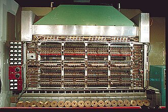

John Von Neumann
architectre computer layout
>
In 1945 John Von Neumann came out with his new architecture computer layout. He worked on and created this new layout during the Manhattan project. Neumanns new layout had created the fastest mathematics computer of the time. Solving math questions faster than any other computer or human.
Neumann focused on the stored-program computer concept, Where instruction data and program-data are stored in the same memory. This consists of the control unit, arithmetic and logic unit (ALU), memory unit, registers and inputs/outputs.
You can see Neumann's architecture layout in most of your modern day computers.

home page